Hướng dẫn: Chủ shop và Shop lên đơn
Dành cho người lên đơn và theo dõi đơn hàng. Chủ shop làm được tất cả các bước, Shop làm được từ bước 1 đến bước 10.
Các bước:
1. Đăng nhập2. Màn hình Đơn hàng3. Thêm đơn4. Đơn nhiều đôi5. Hàng mới hay hàng tồn6. Dán nhiều đơn cùng lúc7. Theo dõi và hủy đơn8. Sửa đơn9. Nhắn tin với Kho10. Đánh dấu Đã giao11. Tổng quan (dành cho Chủ shop)
1. Đăng nhập2. Màn hình Đơn hàng3. Thêm đơn4. Đơn nhiều đôi5. Hàng mới hay hàng tồn6. Dán nhiều đơn cùng lúc7. Theo dõi và hủy đơn8. Sửa đơn9. Nhắn tin với Kho10. Đánh dấu Đã giao11. Tổng quan (dành cho Chủ shop)
1. Đăng nhập

- Mở link app, nhập mật khẩu được cấp cho vai trò của bạn (Shop hoặc Chủ).
- Mỗi người một mật khẩu riêng, không chia sẻ.
- Trình duyệt nhớ mật khẩu. Dùng máy chung thì bấm Đăng xuất ở góc phải.
2. Màn hình Đơn hàng
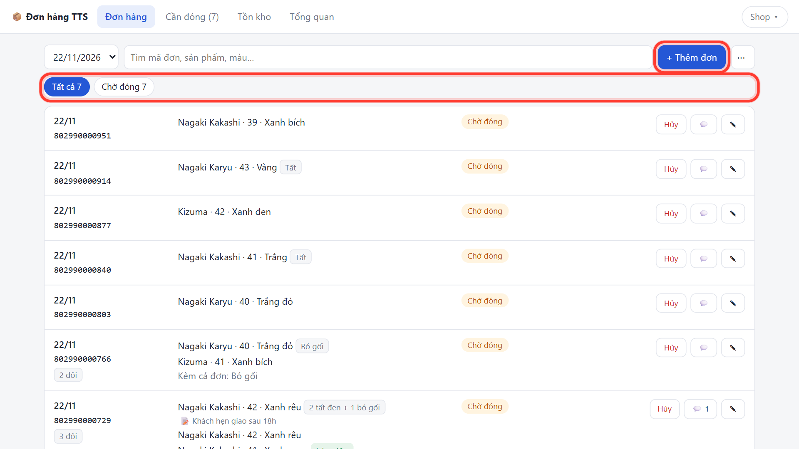
- Chọn ngày ở góc trái, bấm nhãn trạng thái để lọc, hoặc gõ mã đơn / mẫu / màu vào ô tìm kiếm.
- Mỗi dòng là một đơn. Đơn nhiều đôi gộp chung một dòng, ghi rõ "n đôi".
- Nút xanh "+ Thêm đơn" để tạo đơn mới. Dấu "⋯" bên cạnh chứa: Dán nhiều đơn, Xuất CSV, Tải lại dữ liệu.
- Chỉ những trạng thái đang có đơn mới hiện nhãn lọc.
3. Thêm đơn
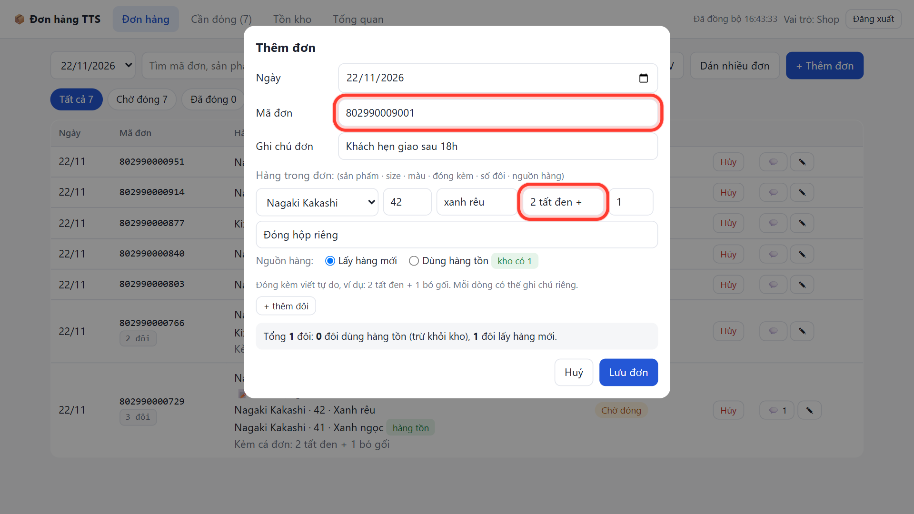
- Bấm "+ Thêm đơn", chọn ngày, gõ mã đơn.
- Dòng hàng: chọn sản phẩm, gõ size, màu. Sản phẩm không có trong danh sách thì chọn "Khác (gõ tên)".
- Đóng kèm viết tự do, ví dụ: 2 tất đen + 1 bó gối.
- Bấm "+ ghi chú" ở dòng hàng để ghi chú riêng cho đôi đó; có ô ghi chú chung cho cả đơn (tuỳ chọn).
4. Đơn nhiều đôi
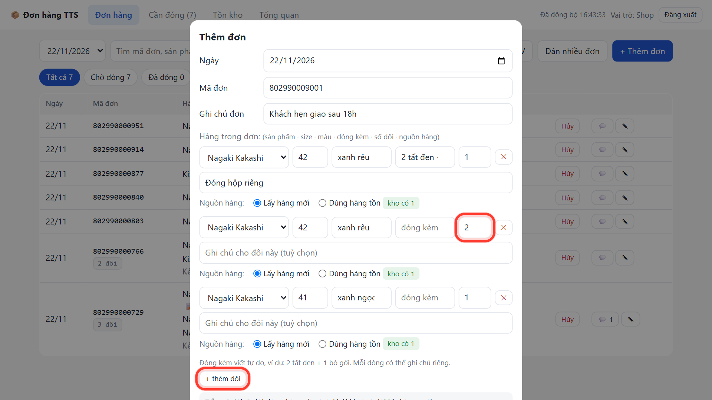
- Bấm "+ thêm đôi" để thêm dòng. Các đôi trong cùng đơn dùng chung một mã đơn.
- Nhiều đôi giống hệt nhau: gõ số đôi ở ô cuối dòng.
- Nút ✕ để bỏ một dòng nhập nhầm.
5. Hàng mới hay hàng tồn
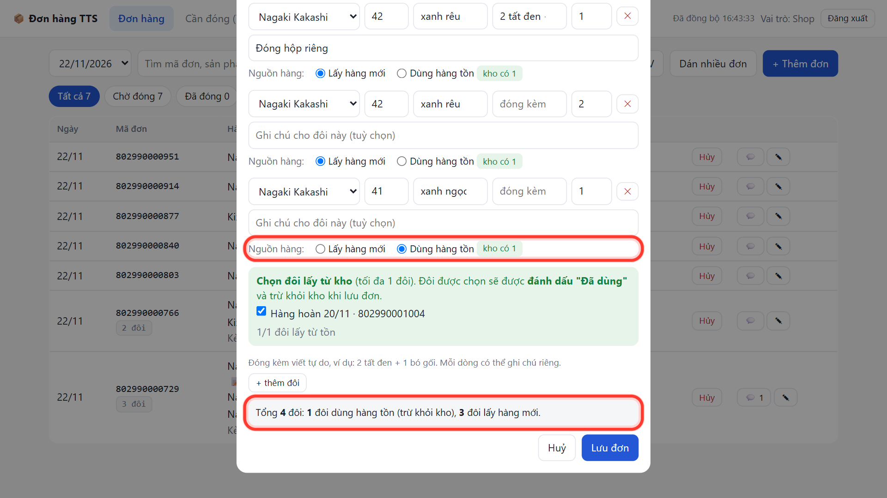
- Mỗi dòng có "Nguồn": Hàng mới (mặc định) hoặc Dùng tồn.
- Bên cạnh hiện "kho có N" = số đôi tồn đúng mẫu.
- Chọn Dùng tồn, tick đôi muốn lấy. Khi lưu đơn, đôi đó được đánh dấu "Đã dùng" và trừ khỏi kho.
- Thiếu tồn thì phần còn lại tự lấy hàng mới. Dòng tổng cuối form cho biết số đôi lấy từ tồn và lấy mới.
- Kiểm tra rồi bấm "Lưu đơn".
6. Dán nhiều đơn cùng lúc
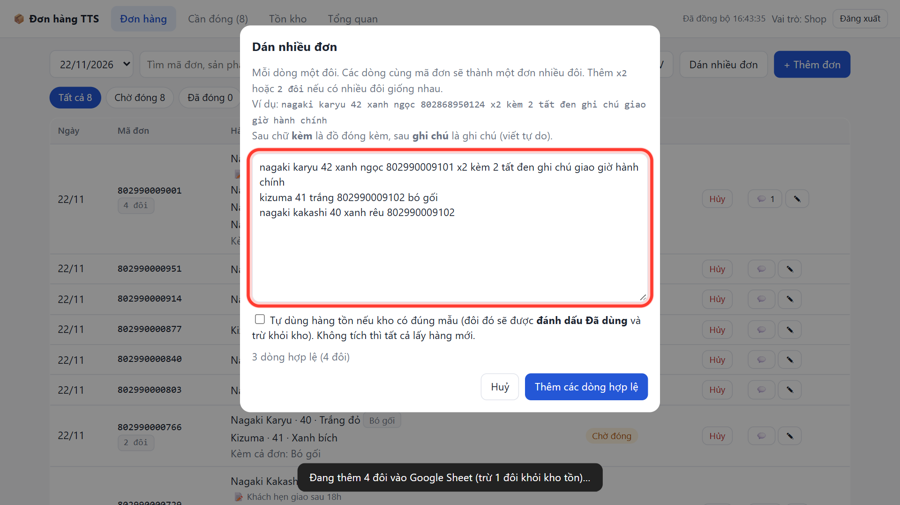
- Bấm "⋯" rồi chọn "Dán nhiều đơn". Mỗi dòng một đôi: tên mẫu, size, màu, mã đơn.
- Thêm "x2" hoặc "2 đôi" nếu có hai đôi giống nhau.
- Sau chữ "kèm" là đồ đóng kèm, sau "ghi chú" là ghi chú. Các dòng cùng mã tự gộp thành một đơn.
- App báo số dòng hợp lệ trước khi thêm; mã đã có trong hệ thống sẽ bị bỏ qua.
7. Theo dõi và hủy đơn
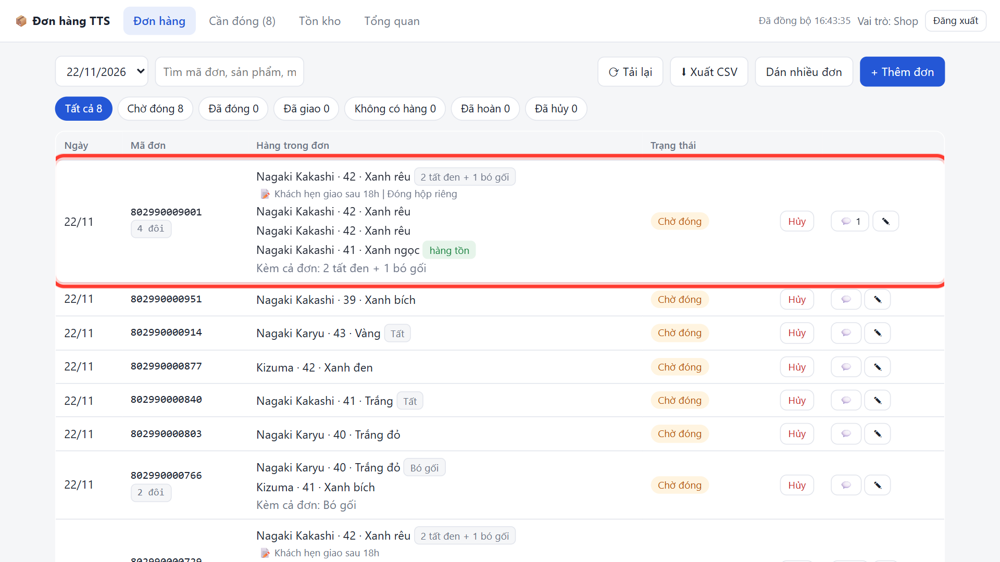
- Đơn mới nằm ở đầu danh sách, trạng thái "Chờ đóng". Kho sẽ đóng hàng.
- Khách hủy khi đơn chưa đóng: bấm "Hủy". Hàng tồn đã dùng cho đơn đó tự trả lại kho.
- Đơn đã đóng hoặc đã giao thì nhờ Kho hoàn tác trước (Chủ shop hủy được mọi lúc).
8. Sửa đơn
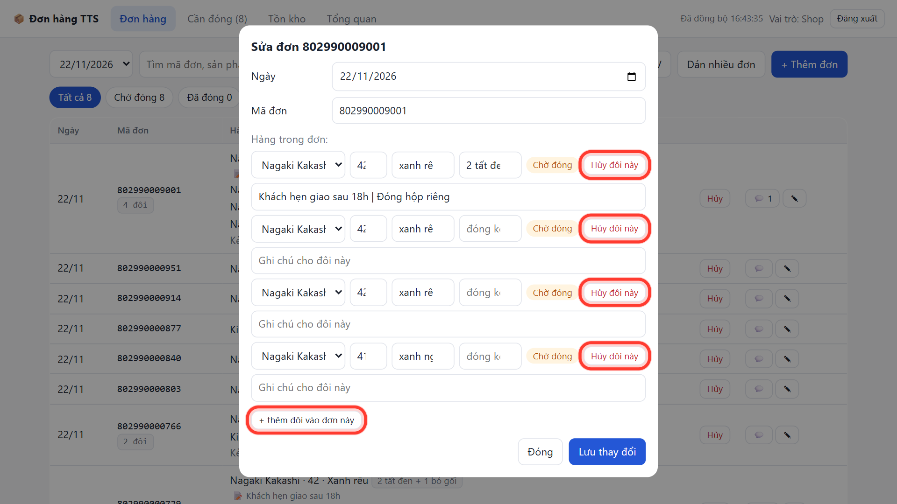
- Bấm biểu tượng bút chì ở cuối dòng.
- Sửa mã, ngày, mẫu, size, màu, đóng kèm, ghi chú. Hủy riêng một đôi, hoặc thêm đôi vào đơn này.
- Đổi mẫu của đôi đang dùng hàng tồn thì đôi tồn tự trả lại kho.
- Đơn đã giao: chỉ Chủ shop sửa được.
9. Nhắn tin với Kho
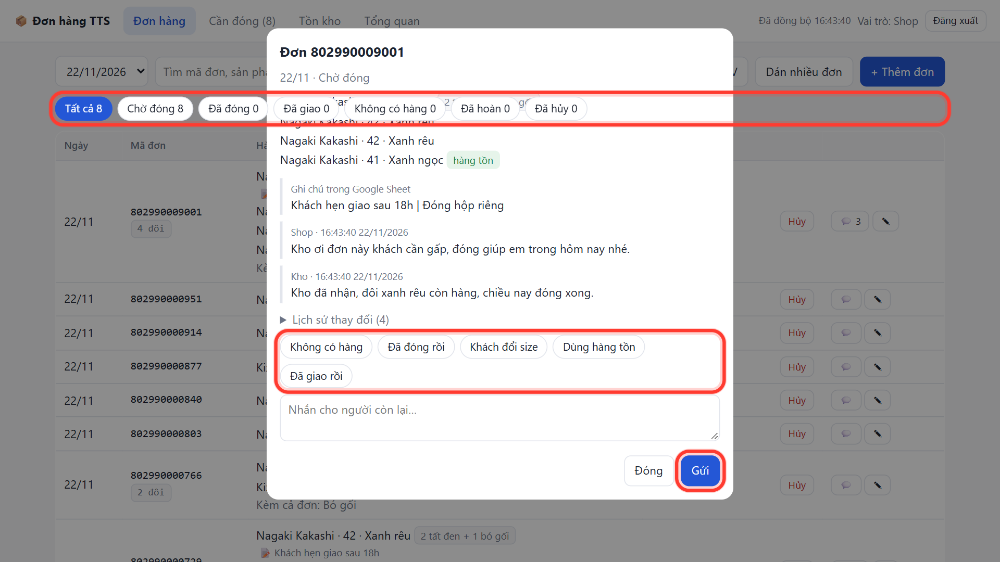
- Bấm biểu tượng tin nhắn 💬 ở cuối dòng để trao đổi ngay trên đơn.
- Có sẵn câu nhanh: Không có hàng, Đã đóng rồi, Khách đổi size…
- Mục "Lịch sử thay đổi" cho biết ai đã đổi gì, lúc nào.
10. Đánh dấu Đã giao
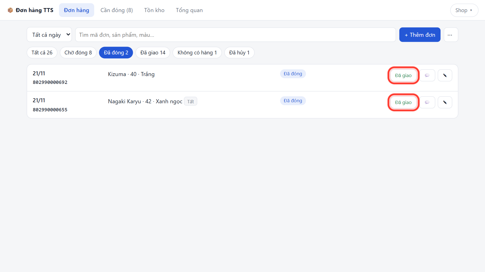
- Kho đóng xong, đơn chuyển sang "Đã đóng".
- Khi đã bàn giao cho đơn vị vận chuyển, bấm "Đã giao".
11. Tổng quan (dành cho Chủ shop)
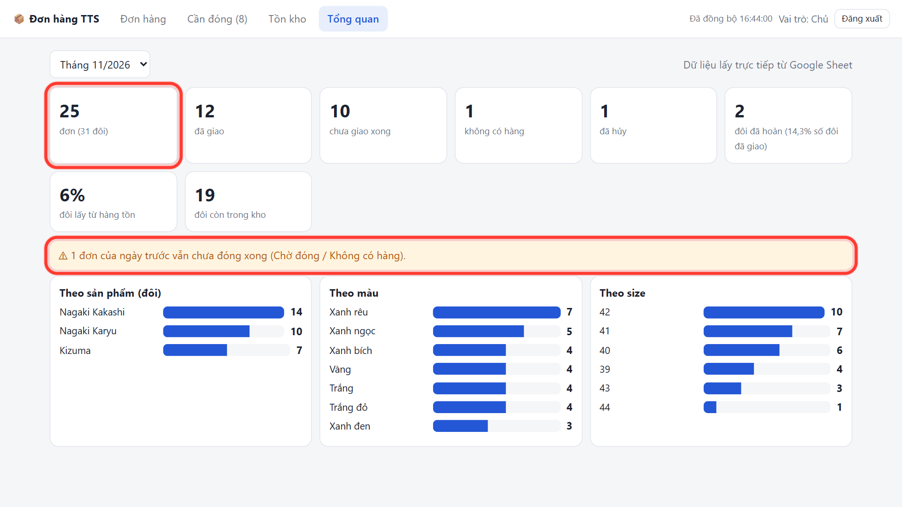
- Số đơn, số đôi, đã giao, chưa giao xong, không có hàng, đã hủy, số đôi đã hoàn và tỷ lệ hoàn.
- Cảnh báo: đơn của ngày trước vẫn chưa đóng, đơn thiếu mã…
- Biểu đồ theo sản phẩm, màu, size. Chọn tháng ở góc trái.
- Chủ shop làm được mọi thao tác của Shop và Kho.
Dùng trên điện thoại
Giao diện tự gọn lại trên điện thoại: các tab nằm ở đáy màn hình, mỗi đơn là một thẻ, nút bấm to hơn, biểu mẫu mở toàn màn hình với nút Lưu luôn hiện ở đáy.
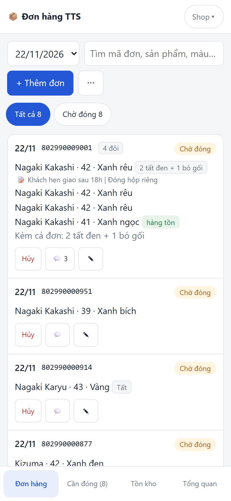
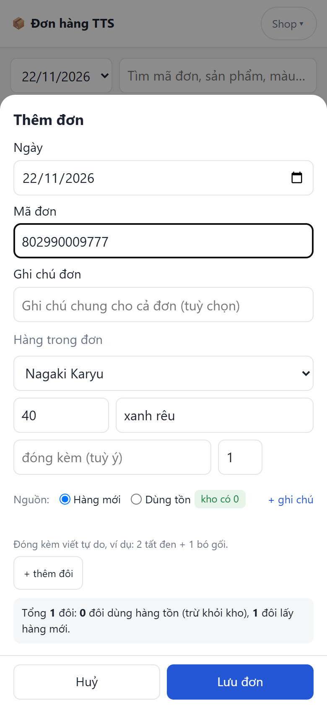
Nhớ nhanh:
Máy đang mở: bấm Ctrl + F5 khi có bản mới
Mật khẩu riêng từng người, dùng máy chung nhớ Đăng xuất
Cần trao đổi: nhắn ngay trên đơn (biểu tượng tin nhắn)
Trên điện thoại: các tab nằm ở đáy màn hình
Máy đang mở: bấm Ctrl + F5 khi có bản mới
Mật khẩu riêng từng người, dùng máy chung nhớ Đăng xuất
Cần trao đổi: nhắn ngay trên đơn (biểu tượng tin nhắn)
Trên điện thoại: các tab nằm ở đáy màn hình